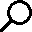

A test in it's natural habitat, hunting for prey. It eats quick brown foxes. Not for nourishment, but because this is a placeholder. YAAAAAAAAAAAAAAYYYY!!!!!!!!!!!!!
Random page
All pages

A test in it's natural habitat, hunting for prey. It eats quick brown foxes. Not for nourishment, but because this is a placeholder. YAAAAAAAAAAAAAAYYYY!!!!!!!!!!!!!